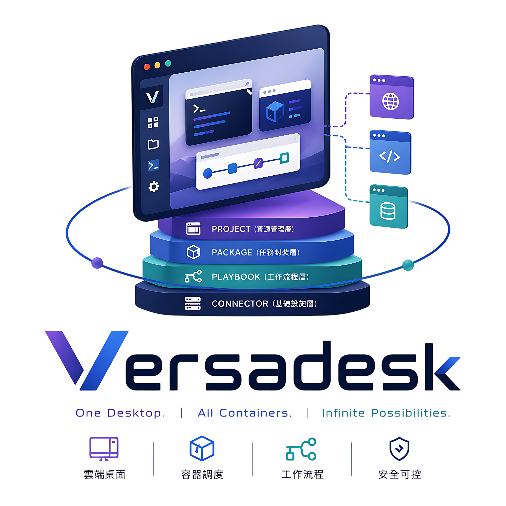

Versadesk
雲桌面運算平台
以 Container 為核心的雲端運算平台，凡 Container 能執行的工作負載都能管理。
搭配 Playbook 工作流程與 Subdomain Proxy，在瀏覽器中提供類桌面的多視窗操作體驗。

四層解耦架構
每一層獨立設計，擴充任何一層都不影響其他層
專案 Project
管理成員、資料集、權限與任務結果，提供完整的工作空間隔離。
套件 Package
將 Playbook 包裝為使用者友善的執行介面，附帶參數表單與 Page 頁面。
Playbook
以 YAML 定義任務邏輯，支援 Nunjucks 模板與多服務並行（concurrency）。
Connector 模組
橋接平台與運算後端（目前支援 Docker。Kubernetes 與 公有雲則規劃中），同一份 Playbook 切換 Connector 即可跨環境執行。
平台特點
從容器代理到權限控管，覆蓋日常使用所需
Subdomain Proxy 代理
每個容器服務分配獨立子網域，容器內感知自身跑在根路徑，免除v1.0.0版本的 Path Rewrite 衍生的相容性問題。
{{JobId}}-jupyter .desk.Versadesk.app
桌面多視窗體驗
每個容器服務以獨立視窗呈現，Jupyter、TensorBoard、File Browser 全在同一個畫面內操作，不再切換分頁。
Playbook 工作流程
類 docker-compose 的 YAML 語法，支援 Nunjucks 模板。一份定義跨環境執行，多服務並行。
三層 RBAC 權限
平台、套件、專案三套獨立的 RBAC 系統，從六級平台權限到 Owner/Admin/Executor/Viewer 細緻控管。
Container 通用
不限於 AI 訓練——AI 推論、資料處理、遊戲伺服器、Web 服務、開發環境，凡 Container 能跑都能上。
套件 & 參數表單
把複雜 Playbook 包裝為使用者友善的執行介面，自動產生參數表單，支援 JSON 匯出匯入跨環境部署。
Page 嵌入式頁面
三種 Page 類型（專案 / 結果 / 檔案頁面），搭配 Client API 打造客製化儀表板、即時監控與資料可視化。
Element 模組整合
把自訂 Web 應用嵌入平台導覽列或桌面，像原生功能一樣呈現，打造「平台內的平台」。搭配 Theme 模組可完整客製化視覺主題與品牌識別。
兩種操作模式，自由切換
同一平台兩種風格，滿足不同使用者習慣
桌面模式
圖示化介面，類作業系統體驗，每個容器服務以獨立視窗呈現，可同時開啟多個 Proxy Page，像本機桌面一樣操作。
- ✓ 多視窗並列，無需切換分頁
- ✓ 類 Windows / macOS 桌面體驗
- ✓ 適合一般使用者與非技術人員
傳統網頁模式
側邊欄導覽，標準 Web 應用布局，提供更直覺的列表與表單操作介面，適合開發者與進階使用者。
- ✓ 標準 Web 應用布局
- ✓ 清楚的清單與表單操作
- ✓ 適合開發者與管理者
適用場景
從研究團隊到企業 IT，Versadesk 都能勝任
AI / 機器學習團隊
統一管理模型訓練與推論服務，Jupyter、TensorBoard、各類 WebUI 全在同一桌面操作。Playbook 一次定義。
教育機構 / 研究單位
老師定義套件設計playbook，學生一鍵執行或研究生透過playbook設計工作流程加速訓練。每位學生資料集與環境藉由專案完全隔離，可限制 GPU 與記憶體上限，防止資源濫用。
企業 IT / DevOps
自行設計內部Element工具（管理介面、檔案瀏覽器、監控儀表板）。透過專案與套件權限，不同部門互不干擾。Element 模組可嵌入既有業務系統。
遊戲 / 媒體 / 其他服務
遊戲伺服器、轉碼任務、3D 渲染——Container 能跑的都能上。Subdomain Proxy 讓任何 Web 管理介面都能透過平台代理。
關於 Versadesk
Versadesk 團隊致力於提供最完整的容器化雲端運算解決方案。從硬體到軟體的全方位整合，幫助企業與開發者快速部署任何容器化應用。
🏗️ 硬體架構規劃
網路、伺服器、線路及電力規劃，提供完整的部署建議。
💻 軟體架構整合
儲存系統、網絡架構、叢集建立及 Wildcard DNS / SSL 一次性配置。
🔌 跨後端 Connector
已支援 Docker，K8s 與公有雲（AWS / GCP / Azure）規劃中。